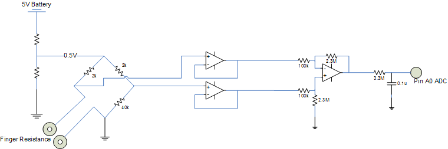
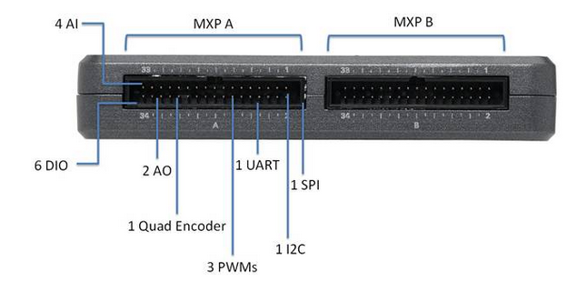
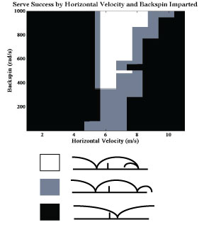
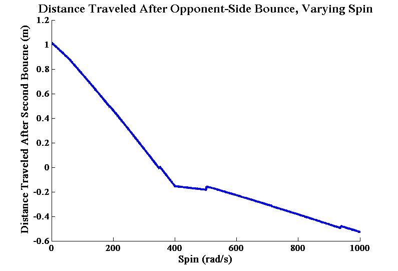
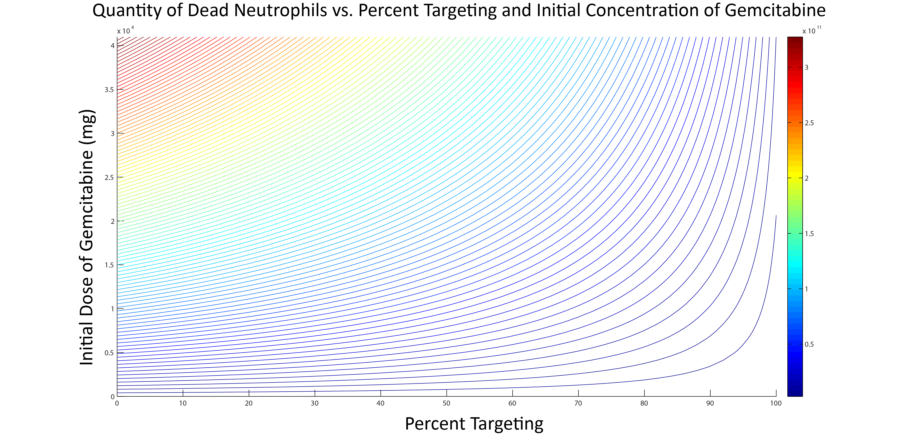
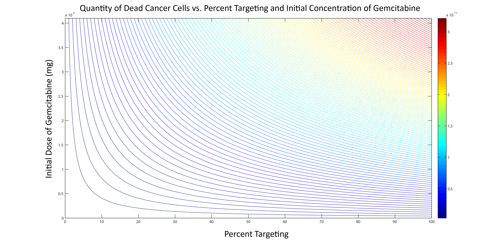
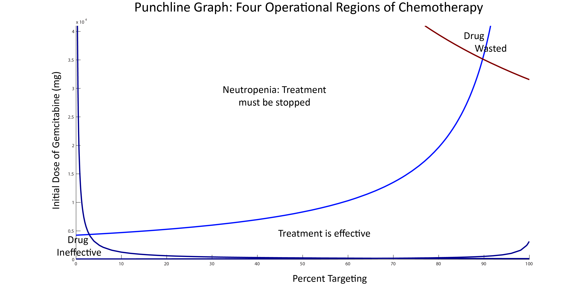

SmarterBoard


In my second semester, I designed and built a program that would take an image of a hand drawn circuit diagram and render it neatly and professionally for use in a lab report or presentation.
My group chose this project after realizing that we could essentially automate the conversions we, as students, were doing, using services like Fritzing or LT Spice, to make hand-drawn circuit diagrams appropriate for our lab reports and presentations.

Above is the general pipeline we designed for our service. Our program took the input image in and converted it to black and white, and then to a matrix. We found the central lines of the diagram by looking at where the average darkness was greatest in the rows and columns of the matrix and cropped around segments of the diagram by finding intersections between these central lines.
Having isolated each segment, we searched each image for components by looking for any instance of non-white space above and below the central line of each segment. Once we found these instances, we were able to crop to the components within the segment by making an assumption above the maximum distance between each component. We passed these into a machine learning classifier.

Using 526 images of hand-drawn resistors and capacitors, in addition to a slanted Gabor filter, our machine learning classifier was able to identify components as either a resistor or a capacitor. Once we identified which components were in each segment, we drew each segment and reassembled the drawing, now appropriate for a lab report or presentation.
For more information about our work, please check out our GitHub repository.

Team Sailing Research

In the summer of 2014, I worked on Olin's campus as part of the Team Sailing Research team, with Research Scientist Alex Morrow. Our goal was to begin prototyping a system that would increase the autonomy of blind sailors on sailboats. By the end of the summer, we had succeeded in building a platform that took a blind sailor's input in the form of a key-press on a standard 12 button keypad. Each key-press corresponded to a certain piece of information that a Raspberry Pi computer would say aloud to the blind sailor.

Above are two schematics detailing the current interactions of blind sailors and the way our system works in this context. Currently, two blind sailors sail with two sighted guides. The guides are using their vision to relay information to the blind sailors. Our system performs the same action but eliminates the middleman in the current system. The blind sailor only gets the information they requested from each key-press.

The key-presses on our 12 button keypad were read and interpreted by an Arduino Uno, a microprocesser we used due to its easy prototyping capabilities and affordability. Once the Arduino Uno understood which key had been pressed, it communicated that over radio to a credit-card sized computer, the Raspberry Pi.
The Raspbeery Pi is constantly gathering data and, when it understands which key has been pressed, it performs a text-to-speech conversion. It reads the text file of whatever information that key corresponds to, converts it to an audio file, and recites the information aloud to the blind sailor.
For more information about this ongoing project, please contact Alex Morrow.

Python Oscar Predictor

As part of a homework assignment second semester, I was tasked with gathering text from the web and using computation to perform some kind of linguistic analysis. I chose to work on an Oscar Predictor, which successfully predicted the Oscars in four categories approximately 5 hours before the actual awards show.
My partner and I gathered tweets under the hashtag #OscarPrediction2014 and sorted the tweets based on which actors, directors, actresses, and movies were mentioned in the body of the tweet. We performed sentiment analysis on each tweet and averaged the data. We produced the likelihood of positive or negative tweets that predicted who would win the Oscars in the categories of Best Actor, Best Film, Best Actress, and Best Director.
For Best Actor, we predicted Matthew McConaughey would win.

For Best Film, we predicted 12 Years a Slave would win.

For Best Actress, we predicted Cate Blanchett would win.

For Best Director, we predicted Alfonso Cuaron would win.
For more information about this project, please check out our GitHub repository.

Optimal Edge Detection
In my Linear Algebra and Differential Equations course, I used a combined Gaussian filter and Sobel operator to optimize finding edges in an image. Edge detection is used in the real world as an instrumental part of computer vision, machine vision, and image processing. My team used edge detection to cleanly identify faces and facial features.

Starting with the above image of Audrey Hepburn, we applied the Sobel operator to the unchanged image itself. The resulting image, shown below, was particularly noisy, picking up on subtle changes in the pixels' brightness. Applying the Gaussian filter beforehand, as we learned in this project, smoothed out the pixels. Then using Sobel, we found we could quickly and efficiently get an accurate rendering of the edges and features of Audrey Hepburn's face.

For more information about the mathematics, please check out our project presentation.

Equal Colors

As part of my Arts, Humanities, and Social Sciences Foundation course at Olin, I utilized principles of cyber-activism to advocate for racial equality in America. I designed and built a website, called Equal Colors, to make race a topic we can discuss. The goal of Equal Colors is to create a safe and open forum for a critical discussion on race and connect people of all different cultural and racial backgrounds.
I placed a brief timeline of racial issues in America on my home page. I created a page entirely related to racial stereotypes and analyzed the shooting of Trayvon Martin through the lens of racial conditioning. On another page, I listed a variety of race statistics and targeted the inherent problems behind color-blind racism. I had a dedicated forum page to a variety of topics I had posed. All of these pages were geared towards eliciting some form of reaction and discussion from the viewer.

Above was one method I employed to remove the taboo and stigma of race and make it an easier topic to broach. My friends and I took a bunch of selfies and then I, using Photoshop, overlayed a color over all of their exposed skin. The images were designed to help the viewer realize that race makes up one color. It can be as vairable as purple, blue, or yellow. It is an important part of a person's ethnic identity and has had a huge impact on America's history but it is also just a color. And you can discuss the way a color impacts a person's experience in this country.
To check out the site and learn more about my cause, please visit Equal Colors.

Biometric Circuits
Working in a team of five, we built several biometric circuits to record a person's fear response to varying stimuli. Collectively, we recorded galvanic skin responses, breathing rate, blood pressure, and heart rate.
I built the GSR (Galvanic Skin Response) circuit using the above schematic. This particular circuit works by comparing the resistance along skin against other resistors in a Wheatstone bridge. The general idea is that the more scared the subject is, the sweatier their skin becomes, and the lower the resistance along their skin is, compared to the other resistors in the bridge.
We began by taking the test subject's resting response. We then monitored the voltages coming out of our circuits while exposing the test subject to horrific videos and playthroughs of scary videogames. Specifically, we wanted to measure the effect of audio in terms of fear response. In our third trial, we exposed the test subject to scary videos but muted the volume. Instead, the subject listened to calming and relaxing music.
After looking at our data, we concluded that audio had significant impacts on the fear response. The absence of scary audio and the presence of relaxing music greatly decreased our measured fear response. The horror videogame industry definitely needs to compensate their audio departments for contributing heavily to the fear response and game immersion of their players.

Olin Robotic Sailing
I joined the Olin Robotic Sailing Team in the first semester of my freshmen year. I spent the year on the electrical team, working on redesigning our system. Our electrical system was centered around a myRIO, due to the amount of I/O it gave us for all of our instrumentation. In addition, the myRIO allowed us to prototype rapidly on protoboards and easily separated power and signal.
In terms of redesigning our system, we had moved from servos to Dynamixels, due to their precision and position control. Dynamixels are also easily identifiable because they only respond to specifically coded packets of data and are, as a result, simple to daisy chain. We also wanted to plan our system better, waterproofing appropriately, and making sure all of our components are properly secured in the boat. We worked on redesigning our PCBs and testing our Dynamixels using an Arduino.

Above is a signal diagram we drew during the year, categorized by signal type, and a diagram depicting the I/O and communication protocols we had access to with the myRIO. Our goal, as a team, is to accomplish a trans-Atlantic autonomous voyage.
To hear more about this project and our progress, please check out the Olin Robotic Sailing page.

The Ghost Serve
As part of a Mechanics class second semester, I worked with a partner to model a ghost serve in ping pong. In this type of serve, as shown above, the ball's second bounce on the opponent's side of the table generates enough back spin to actually bounce backwards without going over the net. This type of trick shot essentially guarantees a point to the server if they can successfully execute the serve. We knew that the serve was possible after seeing a friend of ours use the serve in everyday play and through online examples.
We first had to prove in our model that the serve was possible and then from there, we chose to optimize the serve by varying the initial amount of backspin on the ball. Below are free-body diagrams for the flight and bounce models of our ball, post-serve. As shown in the diagram above, we had three separate flight phases and two bounce phases, with different equations depending on whether we were in flight or bounce.

Varying initial horizontal velocity and rotational velocity, we produced the punchline graph below where we isolated the region in which a legal ghost serve is successfully completed.
After selecting an initial horizontal velocity of 6 m/s that produced a legal serve no matter how much backspin was placed on the ball, we varied initial backspin to optimize the ghost serve. We wanted to know how much backspin you would have to put on the ball to travel the greatest horizontal velocity backwards after the second bounce. Below is our optimization graph, where the greatest negative distance is our optimized ghost serve. 
For more information about our model, please check out our paper.

Sound Locks
My final project in my first electrical engineering class was to design and build a circuit that would only "unlock" when the correct tone was played. In terms of the circuitry, we defined unlocking with an LED lighting up but we could have amplified the output voltage and actually moved a servo.
As shown in the above diagram, we took the input signal and put it through a first-order bandpass filter to center in on as narrow a range of frequencies as we could using this filter. We then placed the filtered signal through a rectifier to convert our AC signal to DC. We amplified our signal at this point and fed it through an integrator so that the right range of frequencies needed to be sustained for a period of time before the circuit would unlock.
For more information about this project, read our report or check out this educational video and advertisement we made for our product.

Pharmacokinetics
Working with a partner, I built a model that analyzed the pharmacokinetics of the drug Gemcitabine, which is a commonly used chemotherapy drug for pancreatic cancer. In analyzing the pharmacokinetics, we wanted to understand how the drug moves through the body and where it ends up. Injected intravenously, as shown in the models above, some of the drug is lost in urine while some of it makes it to both healthy neutrophils and cancer cells. In our model, we created dead cell counters to determine the effectiveness of the drug. We varied percent targeting, i.e. how much of the drug makes it to cancer cells versus healthy cells, and initial dosage. 
As shown in the above graph, we see that as we increase the initial dosage at low levels of targeting, we kill more healthy cells but as we increase percent targeting, we are killing less and less healthy cells. This allows us to administer higher initial doses of the drug. This graph shows us that the model makes sense and is behaving in the way we expect, as does the graph below.
Similarly, this graph shows that as percent targeting and initial dosage increase, we kill more and more cancer cells and enter our success case, in which we kill cancer cells faster than they grow. Below is our punchline figure.
Combining the above two graphs, we created our punchline figure in which we separate the behavior of the drug into 4 categories: not effective, killing too many healthy cells and posing a risk to the patient, successfully killing cancer cells, and wasting the drug. What we discovered is that as we increase percent targeting, we can exponentially increase initial dosage to maximize effectiveness.
For more information about this project, please check out our final poster.

Sneaky & Squeaky Squirrel
The story: Sneaky Squirrel and Squeaky Squirrel are gathering food for the approaching winter. Sneaky Squirrel runs along the top of the tree and knocks acorns down with its tail to Squeaky Squirrel, waiting on the forest floor. However, the tree is full of holes and obstacles so Sneaky and Squeaky Squirrel need your help to gather the acorns. You have 30 seconds to build a path from Sneaky to Squeaky.
Working in a team of 5, we had to design a game for 4th graders centering around a specific motion of an animal of our choosing. My team worked with the bounding motion of a squirrel. We assembled a puzzle where our squirrel, which we called Sneaky Squirrel, would bound along at the top of a ramp and knock an acorn down with its tail. The players would know which acorn was being knocked down and had 30 seconds to build a path from Sneaky Squirrel, at the top, to Squeaky Squirrel, who waited at the bottom to catch the acorn. The players were free to move Squeaky Squirrel along the bottom of the ramp and, using path pieces we had previously assembled, were free to place them anywhere along the ramp.
Our goal was to get a group of 4th graders working together to solve the puzzle but we found more success when a single child played the game. They could think more cohesively and assemble the path themselves, instead of the chaos of 5 or 6 kids constantly moving path pieces.


I am not an engineer who has been writing C# or Java since I was 5. I am an engineer who picks things up quickly and who solves problems. While I may make the same mistake twice, I probably won't make it a third time.
Currently, I am a sophomore at the Olin College of Engineering in Needham, Massachusetts. I am working on an Electrical and Computer Engineering major.
I am incredibly excited about opportunities to work in the fields of project management, software development, and electrical engineering.
For my resume, please click here.


Website designed and built by Zoher Ghadyali